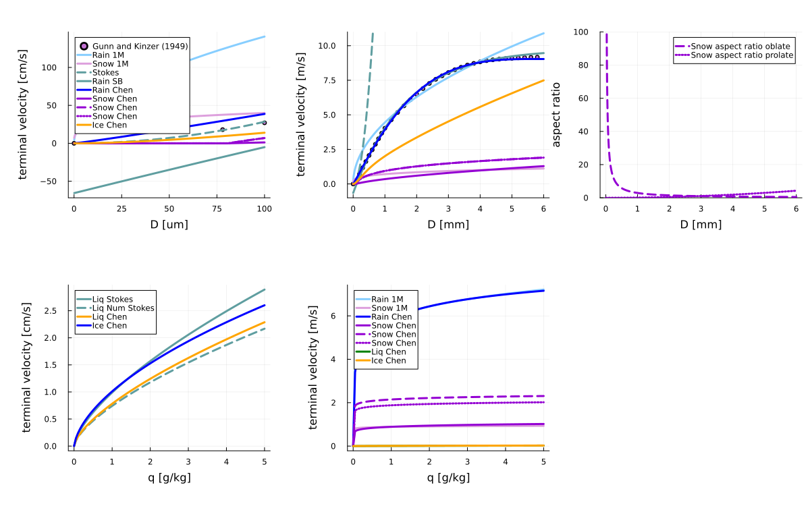

Terminal velocity
CloudMicrophysics.jl offers several parameterizations of the relationship between particle size and terminal velocity:
- A simple power-law used in the 1-moment microphysics scheme,
- An analytical Stokes-regime formulation for cloud liquid droplets in two-moment microphysics,
- The rain terminal velocity used in Seifert and Beheng 2006 [10],
- The rain and ice terminal velocities described in Chen et. al. 2022 [12].
The above terminal velocities need to be averaged over the assumed particle size distributions, to get the mass- or number-weighted group terminal velocities used in the bulks schemes:
- In the non-equilibrium microphysics, we use the Chen et al. [12] parameterization and assume a monodisperse size distribution to obtain the cloud liquid and cloud ice sedimentation velocities.
- In 1M microphysics, we assume an exponential size distribution for rain and snow and use the power-law formulation when deriving process rates such as accretion. The Chen et al. [12] terminal velocity is available in 1-moment scheme for rain and snow, but without re-deriving other process rates.
- In the 2-moment scheme, for rain, the Seifert and Beheng [10] or the Chen et al. [12] parameterizations can be used. For cloud liquid droplets, we use the analytical Stokes-regime terminal velocity formulation.
- The P3 scheme can only be run with the Chen et al. [12] terminal velocity and uses it when deriving the process rates.
See the relevant sections in 1M, 2M, P3 and non-equilibrium microphysics documentation for more details.
Power-law relationship
We assume that rain drop and snow terminal velocities can be parameterized as
\[v_{term}(r) = \chi_v \, v_0 \left(\frac{r}{r_0}\right)^{v_e + \Delta_v}\]
where:
- $r$ is the particle radius,
- $r_0$ is the typical particle radius used to nondimensionalize,
- $v_0, \, v_e \,$ are the default coefficients,
- $\chi_v$, $\Delta_v$ are the coefficients that can be used during model calibration to expand around the default values. Without calibration all $\chi$ parameters are set to 1 and all $\Delta$ parameters are set to 0.
The rain drop terminal velocity coefficients are obtained from the balance between the gravitational acceleration (taking into account the density difference between water and air) and the drag force:
\[\begin{equation} v_0^{rai} = \left( \frac{8}{3 \, C_{drag}} \left( \frac{\rho_{w}}{\rho} -1 \right) \right)^{1/2} (g r_0^{rai})^{1/2} \label{eq:vdrop} \end{equation}\]
where:
- $g$ is the gravitational acceleration,
- $C_{drag}$ is the drag coefficient,
- $\rho$ is the density of air,
- $\rho_w$ is the density of water.
Assuming a constant drag coefficient for rain drops is a big approximation, as it should be size and flow dependent. The coefficients for the snow terminal velocity are empirical.
| symbol | definition | units | default value | reference |
|---|---|---|---|---|
| $C_{drag}$ | rain drop drag coefficient | - | $0.55$ | $C_{drag}$ is such that the mass averaged terminal velocity is close to [5] |
| $r_0^{rai}$ | typical rain drop radius | $m$ | $10^{-3}$ | |
| $v_e^{rai}$ | exponent in $v_{term}(r)$ for rain | - | $0.5$ | |
| $r_0^{sno}$ | typical snow crystal radius | $m$ | $10^{-3}$ | |
| $v_0^{sno}$ | coefficient in $v_{term}(r)$ for snow | $\frac{m}{s}$ | $2^{9/4} r_0^{1/4}$ | eq (6b) [2] |
| $v_e^{sno}$ | exponent in $v_{term}(r)$ for snow | - | $0.25$ | eq (6b) [2] |
Stokes-flow terminal velocity
In the Stokes regime (Re < 1), the analytical fall speed of a spherical particle is given by
\[v_{term}(r) = \frac{2}{9} \frac{(\rho_{water} - \rho_{air}) g}{\mu_{air}} r^2\]
where $\mu_{air} = \rho_{air} \, \nu_{air}$ is the dynamic viscosity of air, and $\nu_{air}$ is the kinematic viscosity. In general, $\nu_{air}$ depends on temperature and pressure, but in our parameterization it is treated as a constant for simplicity.
In two-moment cloud microphysics parameterizations (e.g., Seifert & Beheng 2006), this expression can be integrated over a gamma droplet size distribution to obtain number-weighted and mass-weighted mean fall velocities of cloud droplets.
Seifert and Beheng 2006
Seifert and Beheng [10] uses an empirical relationship between the rain drop size and its terminal velocity
\[v_{term}(D) = \left(\frac{\rho_0}{\rho}\right)^{\frac{1}{2}} [a_R - b_R e^{-c_R D}]\]
where:
- $a_R$, $b_R$ and $c_R$ are free parameters,
- $D$ is the rain drop diameter.
The default parameter values are
| symbol | default value | units |
|---|---|---|
| $a_R$ | $9.65$ | $\frac{m}{s}$ |
| $b_R$ | $10.3$ | $\frac{m}{s}$ |
| $c_R$ | $600$ | $\frac{1}{m}$ |
Chen et. al. 2022
Chen et al. [12] provide a terminal velocity parameterization based on an empirical fit to a high-accuracy model. The terminal velocity depends on particle shape, size, and density. It considers the deformation of large rain drops, as well as a size-specific air density dependence. The fall speed of individual particles is parameterized as
\[\begin{equation} v_{term}(D) = \phi^{\kappa} \sum_{i=1}^{j} \; a_i D^{b_i} e^{-c_i \; D} \end{equation}\]
where:
- $D$ is the particle diameter,
- $a_i$, $b_i$, $c_i$ are the free parameters,
- $\phi$ is the aspect ratio, and
- $\kappa$ is a parameter that depends on the particle shape ($\kappa=0$ for spheres, $\kappa=1/3$ for oblate and $\kappa=-1/6$ for prolate spheroids).
For ice, $j=2$, and for rain, $j=3$, to account for deformation at larger drop sizes. The rain parameterization is valid for $D > 100 \; \mu m$. The free parameter values for solid particles are different for small and large sizes, with a cutoff diameter $D = 625 \; \mu m$.
The aspect ratio is defined as:
\[\begin{equation} \phi \equiv c/a \end{equation}\]
where:
- $a$ is the basal plane axial half-length, and
- $c$ is perpendicular to the basal plane.
In the non-equilibrium cloud microphysics scheme, we assume that both cloud droplets and ice crystals are spherical and $\phi=1$. In all bulk schemes, we assume that rain drops are spherical and $\phi=1$. In the 1-moment bulk scheme for snow we assume $\kappa = 1/3$ and aspect ratio $\phi = 0.15$ by default. Additionally in the 1-moment scheme for snow we provide an option to assume either an oblate or a prolate shape and compute the aspect ratio based on the $m(r)$ and $a(r)$ relationships. For both assumed shapes the particle volume can be represented as $V_p = 4\pi/3 \; a^2 c$. For oblates the particle cross section area is $A_p = \pi a^2$ and for prolates $A_p = \pi a c$. In the P3 scheme we assume that particles are oblates and compute the aspect ratio based on the P3 $m(r)$ and $a(r)$ relationships.
Example figures
In the top row of the figure below, we show different particle terminal velocities in cloud (left panel) and precipitation (middle panel) size range. In the top right panel, we also show the snow particle aspect ratio. In the bottom row, we show the group sedimentation velocities for cloud condensate (left panel) and precipitation (right panel).
include("plots/TerminalVelocity.jl")"/home/runner/work/CloudMicrophysics.jl/CloudMicrophysics.jl/docs/build/1M_individual_terminal_velocity_comparisons.svg"